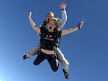

Nasza pierwsza strona internetowa
Parachuting, or skydiving, is a method of transiting from a high point to Earth with the aid of gravity, involving the control of speed during the descent with the use of a parachute. It may involve more or less free-falling which is a period during the parachute has not been deployed and the body gradually accelerates to terminal velocity.
The first parachute jump in history was made by André-Jacques Garnerin, the inventor of the parachute, on October 22, 1797. Garnerin tested his contraption by leaping from a hydrogen balloon 3,200 feet (980 m) above Paris. Garnerin's parachute bore little resemblance to today's parachutes, however, as it was not packed into any sort of container and did not feature a ripcord. The first intentional freefall jump with a ripcord-operated deployment was not made until over a century later by Leslie Irvin in 1919. While Georgia Broadwick made an earlier freefall in 1914 when her static line became entangled with her jump aircraft's tail assembly, her freefall descent was not planned. Broadwick cut her static line and deployed her parachute manually, only as a means of freeing herself from the aircraft to which she had become entangled.
The military developed parachuting technology as a way to save aircrews from emergencies aboard balloons and aircraft in flight, and later as a way of delivering soldiers to the battlefield. Early competitions date back to the 1930s, and it became an international sport in 1952.